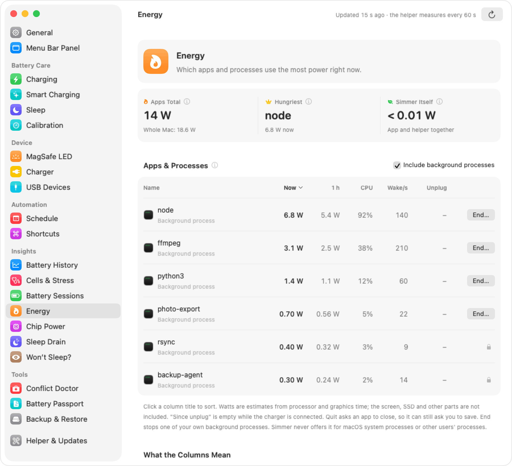
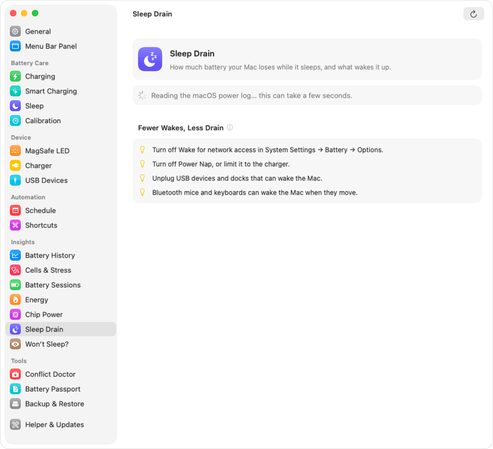
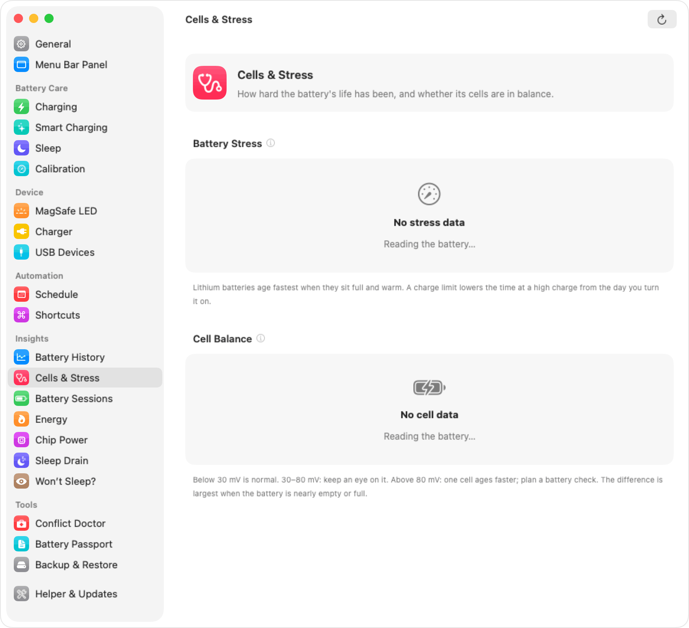
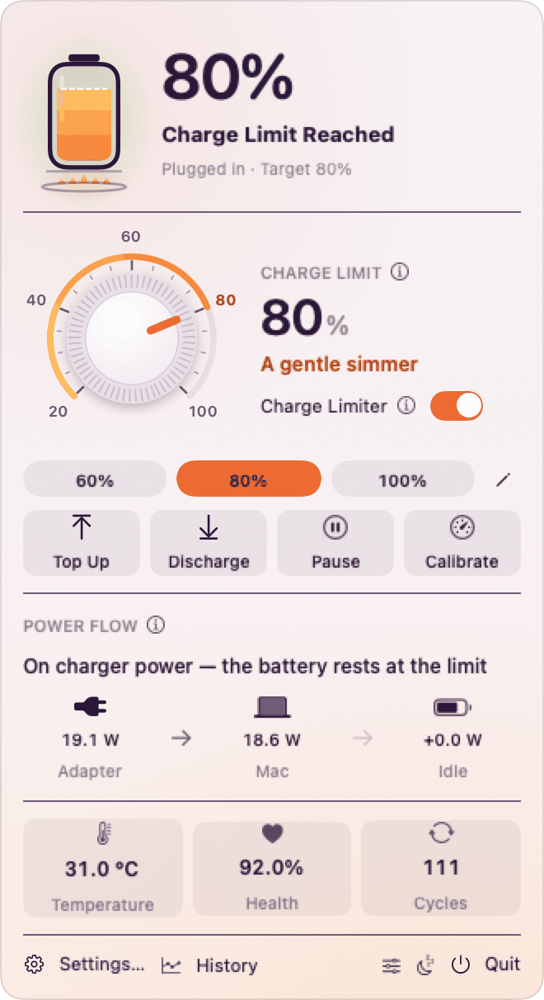
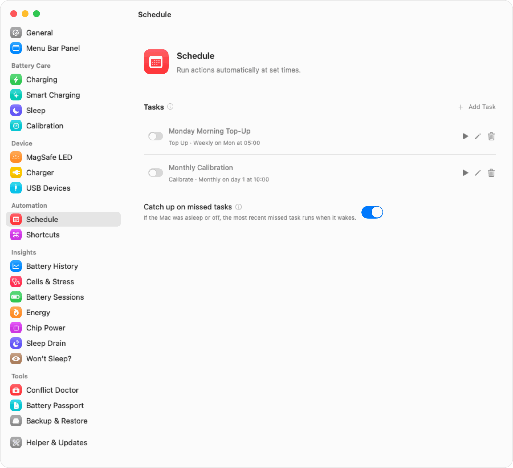

Simmer: macOS battery manager
Make your Mac's battery last longer.
Simmer is a free, open-source menu bar app for macOS. It holds your MacBook's charge anywhere from 20% to 100%, and it shows you what the battery is really doing.
Free under GPL-3.0. Needs macOS 14 or later. Apple silicon, and Intel in beta.
80%
A gentle simmer
The sweet spot for a Mac that stays plugged in: plenty of charge, far less wear.
Turn the knob. The macOS setting stops at 80%. Simmer goes down to 20%, the gold part of the scale.
Batteries age fastest when they sit full and warm.
A MacBook that lives on its charger spends most of its life at 100%, often warm from work. That is the worst place for the cells. Holding the charge lower, for example at 60–80%, slows the wear a lot. You give up some range on days you do not need it, and you keep more capacity for the years you do.
Charging
Pick a limit, then choose how Simmer holds it. Every control works while the app is closed, because a small helper applies it.
One day on the charger, two ways
Grey: a Mac that charges to 100% and sits there. Orange: the same day with Simmer. Move the limit and watch.
Lets the charge drift a little before charging again.
Pauses charging while the battery is hot.
- Hours sitting above 95%
- 0 h with Simmer
0 h without
A simplified model of a typical day, sped up so the shapes are easy to see. Real charge rates and temperatures depend on your Mac, charger and workload.
Charge limit from 20% to 100%
Below the 80% floor of the macOS setting. Simmer writes the limit straight to the Mac's power controller.
Sailing
Let the battery drift a few percent below the limit before it charges again. Fewer tiny top-ups, less wear.
Heat protection
Charging pauses while the battery is hot and continues when it cools down.
Discharge while plugged in
Run the Mac from its battery down to the limit without unplugging. It works with the lid closed, and Simmer keeps the Mac awake.
Automatic discharge
When the charge is above the limit, Simmer brings it down for you.
Top up to 100%
One click charges to full once, then Simmer goes back to your limit.
Calibration cycle
A guided full cycle that recalibrates the battery gauge.
Keep the limit when Simmer quits
Charging stays blocked at the limit even when the app is not running.
Stop charging when sleeping
The Mac stops charging before it sleeps, so it does not creep past the limit overnight.
Disable sleep until the limit
The Mac stays awake until the charge reaches the limit.

Smart charging
The limit changes with your day, so you do not have to change it by hand.

- 00:00–06:00 Cheap or green window: charging prefers these hours
- 06:30–08:00 Ready by 08:00: tops up to 100% just before you usually leave
- 09:30–18:00 Desk mode: the lid is closed on the desk, so the limit drops
Desk mode
A lower limit while the Mac sits on a desk for a long time: in clamshell use, after a number of hours on the charger, or either.
Smart "ready by" top-up
Simmer learns when you usually unplug, and charges to 100% just before that time. The rest of the day, it holds your limit.
Cheap or green charging windows
Choose the hours when power is cheaper or cleaner. Simmer charges in those hours, and keeps a floor you set for the rest of the day.
Insights
See where the power goes, why the battery drained overnight, and how the cells are aging.
Power flow
The charger powers the Mac and the battery rests at the limit.
Power flow
Adapter to Mac to battery, in watts, live in the menu bar panel.
Battery history
Charts of charge, temperature, power, health and cycles, from 24 hours to 30 days.
Top energy apps and processes
Which apps use the most power, with an estimate in watts.
Sleep drain detective
What woke your Mac overnight, and how much charge each night cost.
"Why won't my Mac sleep?"
The apps and processes that keep the Mac awake right now.
Battery sessions
Every stretch on battery: how long, how far it drained, and the average power.
Chip power
Power for the CPU, GPU, Neural Engine and memory.
USB device power
What each connected USB device draws.
Cells and stress
Cell balance and a battery stress meter.
Hardware and macOS percentage
The raw gauge reading next to the smoothed number macOS shows.
Health and cycles
Maximum capacity against the design capacity, and the cycle count.





Tools
Answers to the questions people ask about a Mac battery, and the housekeeping around them.
Charger report
Is your charger, or your cable, strong enough for your Mac? Simmer compares what it offers with what the Mac uses at its peak.
Conflict doctor
Finds the native macOS charge limit and leftover helpers of other charge limiters, which would fight with Simmer. It can remove known leftovers for you.
Battery passport
A PDF with the battery's health record. Useful when you sell your Mac.
Settings backup and restore
Save every setting to a file and load it on another Mac.
Schedule
Run actions at set times, with templates such as a Monday morning top-up or a monthly calibration. Catch-up runs the events the Mac slept through.


Device
Make the charging light tell you something useful, and switch power modes automatically.
Smart mode, at the limit: green.
MagSafe LED modes
System default, smart (orange while charging, green at the limit), always off, or custom.
Custom colour per state
Pick green, orange, a slow or fast orange blink, or off, for each charging state.
LED notifications
Blink patterns when the limit is reached or the battery is hot, and from your own scripts when a long job is done.
Low Power and High Power Mode
Switch them automatically, with separate choices on battery and on the charger.
Everywhere
Simmer lives in the menu bar, and also on the desktop, in Shortcuts, in Terminal and in Raycast.

$ simmerctl limit 80
Charge limit set to 80%
$ simmerctl set sailing on
sailing = on
$ simmerctl status
Battery: 80% (hardware 79.4%)
State: Charge Limit Reached
Limit: 80%
Temp: 31.0 °C
Power: adapter 19.1 W, system 18.6 W, battery 0.0 W (idle)
Health: 92.0% (5750 / 6249 mAh)
Cycles: 111
$ open "simmer://topup"
$ simmerctl led blink heartbeat 36 desktop widgets
Each one is configurable. Charging Controls has buttons that work right on the desktop.
22 Shortcuts actions
Set the limit, top up, blink the LED, read the health. Use them in Automations, for example "at the office, set the limit to 60%".
simmer://URL schemeLinks that work from a browser, a script or another app.
simmerctlcommand-line toolEvery setting, plus status as JSON for your scripts.
Raycast extension
Status, set the limit, top up, discharge and pause from Raycast.
A menu bar panel you arrange
Reorder or hide each section of the panel.
Notifications
For the limit reached, heat, calibration and more.
Automatic updates
Through Sparkle, with EdDSA-signed updates.
Apple silicon and Intel
Full support on Apple silicon. Intel Macs are in beta: testers are welcome.
Private by design
No account and no telemetry. The only network request is the update check, and you can turn it off.
Install Simmer
Homebrew
The cask lives in the Simmer repository, so no separate tap repository is needed.
brew tap umarwaseeem/simmer https://github.com/umarwaseeem/simmer && brew install --cask simmerFirst launch
-
Open it once with right-click
Simmer is free and not signed with a paid Apple Developer ID, so macOS blocks a normal double-click the first time. Right-click Simmer in Applications, choose Open, then Open again. On macOS 15 and later, you may need System Settings → Privacy & Security → Open Anyway.
-
Install the helper
Simmer asks for your administrator password once. Only root can change charging, so a small helper runs as root and does only that. The app itself never runs as root.
-
Pick a limit
Click the menu bar icon and set the limit. 80% is a good start for a Mac that is mostly plugged in.
Requirements: macOS 14 Sonoma or later. Apple silicon is fully supported. Intel Macs are in beta.
Questions
Which limit should I use?
For a Mac that is plugged in most of the day, 60–80% is a good balance. Use Top Up before a day away from a socket. If you are on battery most of the time, a limit gives little benefit: let it charge to 100% and keep the Mac cool.
Is a limit really good for the battery?
Lithium-ion cells wear faster at a high charge and at a high temperature. A battery that sits at 100% on a warm desk ages faster than one that rests at 60–80%. A limit does not stop aging. It slows it.
Is it safe?
Simmer uses the same charging switches in the power controller that macOS uses. It does not change voltages or currents. If anything goes wrong, uninstalling the helper restores normal charging.
Does Simmer work when the app is closed?
Yes. The helper applies the limit by itself. With "Keep the limit when Simmer quits" off, quitting the app gives charging back to macOS.
What happens when the Mac sleeps or shuts down?
During sleep, Simmer can stop charging before the Mac sleeps. When the Mac is shut down, Apple silicon Macs can charge past the limit until macOS and the helper start again. Intel Macs that use the BCLM key keep the limit even when off.
Can I use Simmer together with another charge limiter?
No. Two limiters change the same controls and fight each other. Remove the other tool first. The conflict doctor finds the leftovers of common tools and can remove known helper files.
Does Simmer collect any data?
No. There is no telemetry and no account. The only network request is the update check, which you can turn off. This website also has no analytics and sets no cookies.
More answers in the full FAQ.
Open source, every line
Simmer is free software under the GNU General Public License v3.0. You can use, study, share and change it. Bug reports, Intel test reports, translations and pull requests are very welcome.